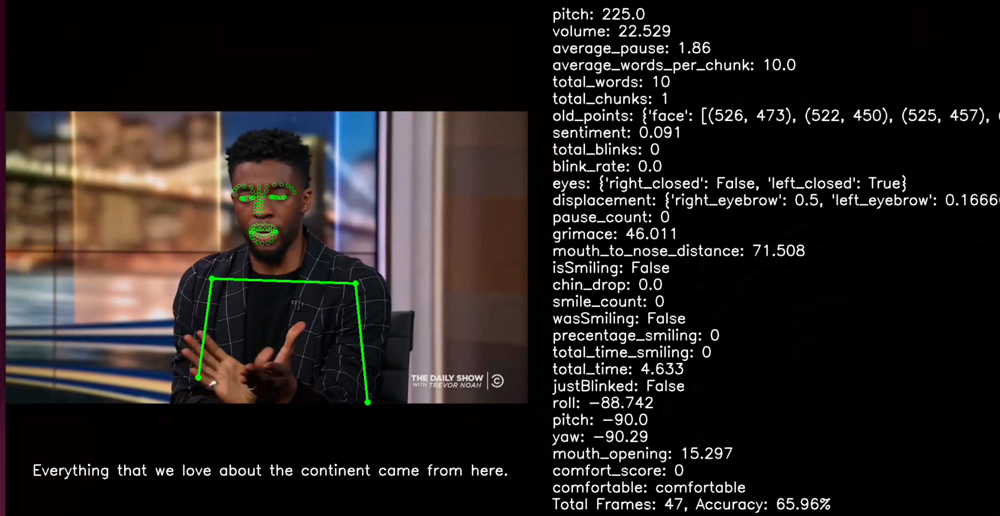
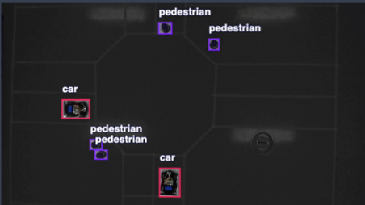

Research and Publications
Here are some of the past research projects and publications I have been a part of.
-
Emotion Perception Research
This is an example of the framework for emotion perception I created while working at the UNR's REU site for 2024.
William Valentine, Megan Webb, Christopher Collum, Dave Feil-Seifer and Emily Hand
Conference Paper
Journal Paper -
BB-Align: A Lightweight Pose Recovery Framework for Vehicle-to-Vehicle Cooperative Perception

This is the code for a research project I conducted with Dr. Lixing Song at Rose-Hulman Institute of Technology regarding alignment for autonmous vehicles.
Lixing Song, William Valentine, Qing Yang, Honggang Wang, Hua Fang and Ye Liu
ICDCS2024: Conference Paper
Presentation -
Intersection Traffic Automation for Vehicles
I conducted this project during the summer of 2023 at Houghton University titled "Intersection Traffic Automation for Vehicles".
William Valentine, Avery Belanger, Jie Zhao
Presentation -
Biochemistry Research

A sample of the tools I made for molecular docking simulations and mass spectroscopy analysis while working with an Alzheimer's research team.
Kara Dawson, Paul Martino, Emma Ryan, William Valentine, Abigail Wheeler (alphabetical)
Presentation